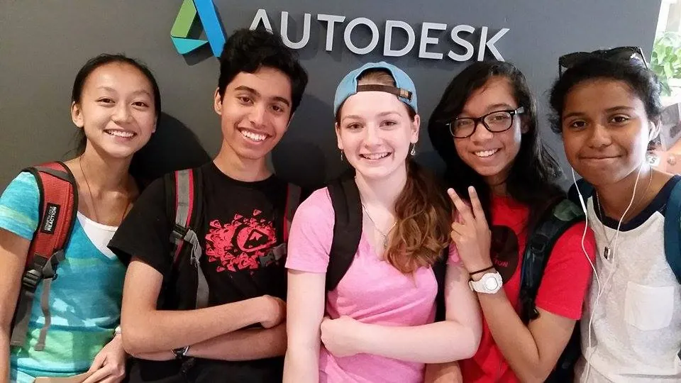
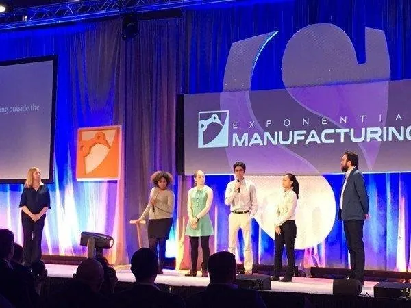

Piece of Mind
Game Development Project | Summer 2015 and Summer 2016
Overview

In the summer of 2015, myself and four friends were invited by an education enterprise, Makeosity, to build the proof of concept for a game that would teach other young people computer-aided design (CAD) skills using Autodesk software. Hosted at the Autodesk office in New York City, we spent four weeks developing a 3D game from scratch in Unity and designing assets in Autodesk's Fusion360. The game would take players through a build mission in an abandoned factory, where they would gain CAD skills along the way and use them to escape.
My Key Contributions
Summer 2015:
- Asset modeling and technical drawing development in Fusion360
- Wrote and user-tested compelling in-game CAD tutorials
- Integrated in-game sound effects in Unity
Summer 2016:
- Environment and asset modeling and texturing in Blender
- Animation scripting and Unity integration
The following spring, we were invited to present our work at Singularity's Exponential Manufacturing Conference


With the proof of concept a success, we were invited back the following summer to build out a more extensive beta version of the game. We were hosted by a startup in New York City, Human Condition, where we were mentored by their CTO (one of the co-founders of Rockstar Games).
When I started as a freshman at MIT that fall I was invited to the Autodesk office in Boston to present our work to their leadership team.